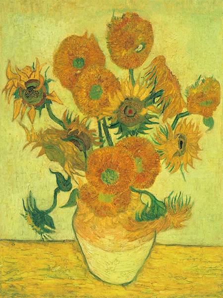

ทานตะวันดอกลำดับที่ 4
ภาพดอกทานตะวัน 15 ดอกในแจกันรูปนี้ เปลี่ยนจากพื้นหลังสีเทอร์ควอยส์เป็นสีเหลือง พร้อมปรับรูปทรงของดอกทานตะวันให้มีความหลากหลายกว่าเดิม ซึ่งเป็นภาพที่หลายคนพูดว่า ดอกทานตะวันมีความโดดเด่น ราวกับกำลังเต้นรำบนแจกัน ปัจจุบันจัดแสดงที่ National Gallery กรุงลอนดอน ประเทศอังกฤษ